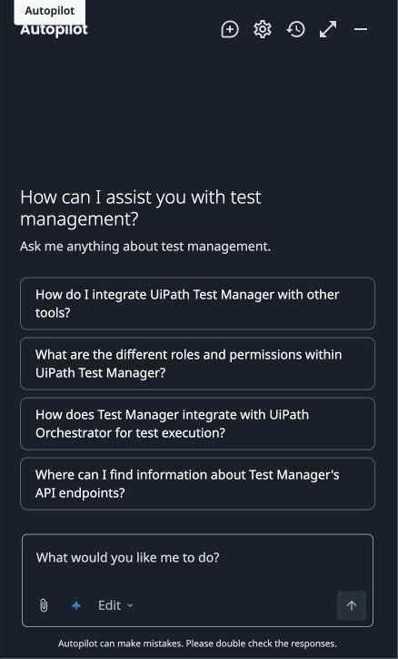

Test Cloud, Autopilot and Delegate¶
Use the import time
The project import in step 1 takes a few minutes. Start it first: download and import the project, then come back and read this page while it runs.
What is Test Cloud?¶
Test Cloud is UiPath's cloud platform for application testing. It brings together:
✅ Test Manager – plan, run and analyze your testing, from requirements to results
✅ Studio Web – build automated tests in the browser
✅ Robots – run your tests for you, in the cloud or on a machine your team provides
✅ Agentic Testing – AI agents at every step: Autopilot in Test Manager, and Delegate on your desktop

What is Test Manager?¶
Test Manager links requirements to test cases, test sets and results, so you always know what's tested and what's failing. Today you work in your own Test Manager project, with UiBank's loan application as the system under test.

Your three helpers¶
Autopilot in Test Manager¶
Autopilot is the AI built into Test Manager. Its testing capabilities are called Autopilot for Testers. You meet it in two ways.
Autopilot buttons run one fixed task from a button in Test Manager:
✅ Evaluate quality (the + Evaluate quality button on a requirement) – finds gaps in a requirement, such as undefined limits and missing edge cases, and suggests fixes (step 2). See Quality-check requirements.
✅ Generate tests – writes test cases from a requirement and its documents (step 3). See Generate tests for requirement.
✅ Import Test Cases – turns an Excel sheet of test scripts into test cases (optional in step 3). See Import manual test cases.
✅ Execution Insights (the Generate Report button on the Execution page) – a report with the top failing tests, common errors and recommendations (step 8). See Generate test reports.

Autopilot chat is a conversation panel inside your project. Open a project, then select the Autopilot icon in the top bar. You ask in plain language, and chat answers from your real project data. It can search your project, build charts, and make changes for you, such as adding labels or creating a test set. It has two modes: Edit, which asks before each action, and Agent, which acts without asking. Today you stay in Edit mode. See About Autopilot chat and Search Test Manager project.

Check what chat tells you
Chat is fast, but it can be wrong. Compare its counts with the Execution page, and its how-to answers with the docs. The panel says it too: "Autopilot can make mistakes."
Delegate on your desktop¶
Delegate is an AI agent on your laptop. It works in your applications, documents and websites the way you would: it reads the screen, clicks and types. With the QA / Testing profile, it also works with Test Manager. Today Delegate:
✅ Runs a manual test case on the UiBank website and publishes the result to Test Manager (step 4)
✅ Reproduces the defect with screenshots and writes a go/no-go report (step 9)
✅ Optional: turns a business document into a requirement and a test case (step 3)
You choose how often Delegate asks before it acts, and you can stop it at any time. You install it and connect it to Test Manager once, in the Prerequisites. Delegate runs on Windows, and on Macs with Apple silicon as Delegate for macOS (Preview). See the Delegate user guide.
Robots¶
Robots run tests with no one at the keyboard. Your trainer provides them, so you install nothing:
✅ Run autonomously (Preview) – a robot reads your written test steps and follows them on the UiBank website, like a careful new colleague (step 4). Your trainer also demos Autonomous Exploration (Preview), where a robot explores UiBank on its own and reports what it finds (step 5).
✅ Cloud robots – they run the automated tests that automation colleagues build in Studio Web (steps 6 and 7).
Which helper when¶
| Helper | What it's for | Where you use it today |
|---|---|---|
| Autopilot buttons | Evaluate a requirement, generate or import test cases, Execution Insights reports | Steps 2, 3 and 8 |
| Autopilot chat | Questions about your project, search, charts, bulk changes such as labels and test sets | Steps 1, 7, 8 and 9 |
| Delegate | Work on your desktop, across apps: test runs, evidence, documents | Steps 4 and 9 |
| Run autonomously (Preview) | A robot runs your written test steps, unattended | Steps 4 and 5 |
| Studio Web + cloud robots | How automation colleagues make tests repeatable, and run them at scale | Steps 6 and 7 |
Buttons vs chat: what uses your AI allowance¶
Licensing and cost
Each user has a monthly AI allowance, called the AI and Agentic usage pool.
✅ Autopilot buttons don't use it. Evaluate quality, Generate tests, Import Test Cases and Execution Insights don't take anything from your pool when you start them from their own buttons.
✅ Every Autopilot chat turn uses it, even when chat runs the same capability for you. Charts exist only in chat.
✅ Delegate tasks use the same pool.
✅ Robot runs don't use your pool. Run autonomously and Autonomous Exploration use the tenant's App Test Platform Units, and cloud robot runs use Platform Units. That's your trainer's budget.
When your pool runs out, Autopilot chat and Delegate pause until your administrator grants a top-up or the month resets. So when a button does the job, use the button.
What is MCP?¶
When Autopilot chat changes something in your project, it uses a set of approved actions called tools, served by Test Manager's own MCP server (MCP stands for Model Context Protocol, the standard way to connect an AI assistant to a system like Test Manager). The tools come with Test Manager, so there's nothing to set up, and in Edit mode chat names each tool and waits for you to select Accept or Reject. You approve your first changes in step 7.
Test Cloud only
Autopilot chat, its MCP tools, charts, Run autonomously and Autonomous Exploration are available only when Test Manager comes with Test Cloud, on the Unified Pricing licensing plan. They're not available in Test Manager on Automation Cloud, or on the Flex plan. See the Test Manager feature availability page.
Preview
Run autonomously, Autonomous Exploration and Delegate for macOS are Preview features. They work for the workshop, but labels and behavior may change, and your tenant may show slightly different screens.
Rule for today
You decide, the agents assist. Treat everything Autopilot and Delegate produce as a draft. Review generated test cases before you create them, read what chat is about to change before you accept it, and check the numbers before you put them in a report.
That's enough theory – let's get started.
Next → 1. Import Your Project and Meet Autopilot Chat